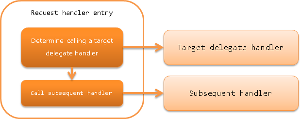

6.1.4. Request Handler Entry¶
Table of contents
This handler is a special handler that calls a delegate handler only for a specific request path. By using this handler, it is possible to implement functions such as “handler processing is performed only for a specific URL in the web application” without modifying the handler.
The main purpose of this handler is to implement the “batch process for downloading of static contents” function using Resource Mapping Handler. In addition, this handler can also be used for purposes such as “changing the database connection that uses only a specific URL” by using the handler together with Database Connection Management Handler and Transaction Control Handler.
This handler performs the following process.
- Determine whether the request path matches and call the delegate handler if it is a target.
The process flow is as follows.
6.1.4.2. Module list¶
<dependency>
<groupId>com.nablarch.framework</groupId>
<artifactId>nablarch-core</artifactId>
</dependency>
6.1.4.3. Constraints¶
None.
6.1.4.4. Usage example of this handler¶
When using this handler, the requestPattern property that specifies the request path for processing,
and the handler property that specifies the delegate handler are configured.
A configuration example for downloading the static contents of JPEG files using Resource Mapping Handler is shown below.
<!-- Handler for downloading static resources of image files-->
<component name="imgMapping"
class="nablarch.fw.web.handler.ResourceMapping">
<property name="baseUri" value="/"/>
<property name="basePath" value="servlet:///"/>
</component>
<!-- Handler queue configuration -->
<component name="webFrontController"
class="nablarch.fw.web.servlet.WebFrontController">
<property name="handlerQueue">
<list>
<component class="nablarch.fw.handler.GlobalErrorHandler"/>
<component class="nablarch.fw.web.handler.HttpCharacterEncodingHandler"/>
<component class="nablarch.common.io.FileRecordWriterDisposeHandler" />
<component class="nablarch.fw.web.handler.HttpResponseHandler"/>
<!-- Configuration for downloading static JPG files with the file extension ".jpg"-->
<component class="nablarch.fw.RequestHandlerEntry">
<property name="requestPattern" value="//*.jpg"/>
<property name="handler" ref="imgMapping"/>
</component>
<!--
For requests other than downloading JPEG files ending with "*.jpg",
the following handler is called
-->
<component-ref name="multipartHandler"/>
<component-ref name="sessionStoreHandler" />
6.1.4.5. Variation of request pattern specification¶
As seen from the configuration example of Usage example of this handler, the requestPattern property specified in this handler
can be configured in a format similar to Glob expression such as //*.jpg.
A configuration example for wildcard is shown below.
requestPattern Request path Results / / Is called /index.jsp Is not called /* / Is called /app Is called /app/ Is not called (* does not match ‘/’) /index.jsp Is not called (* does not match ‘.’) /app/*.jsp /app/index.jsp Is called /app/admin Is not called /app/*/test /app/admin/test Is called /app/test/ Is not called
When the ‘/’ in the last line is overlapped with ‘//’, a notation determining that the match is successful if the string before is a forward match can also be used.
A configuration example is shown below.
requestPattern Request path Results /app// / Is not called /app/ Is called /app/admin/ Is called /app/admin/index.jsp Is called //*.jsp /app/index.jsp Is called /app/admin/index.jsp Is called /app/index.html Is not called (does not match ‘*.jsp’)